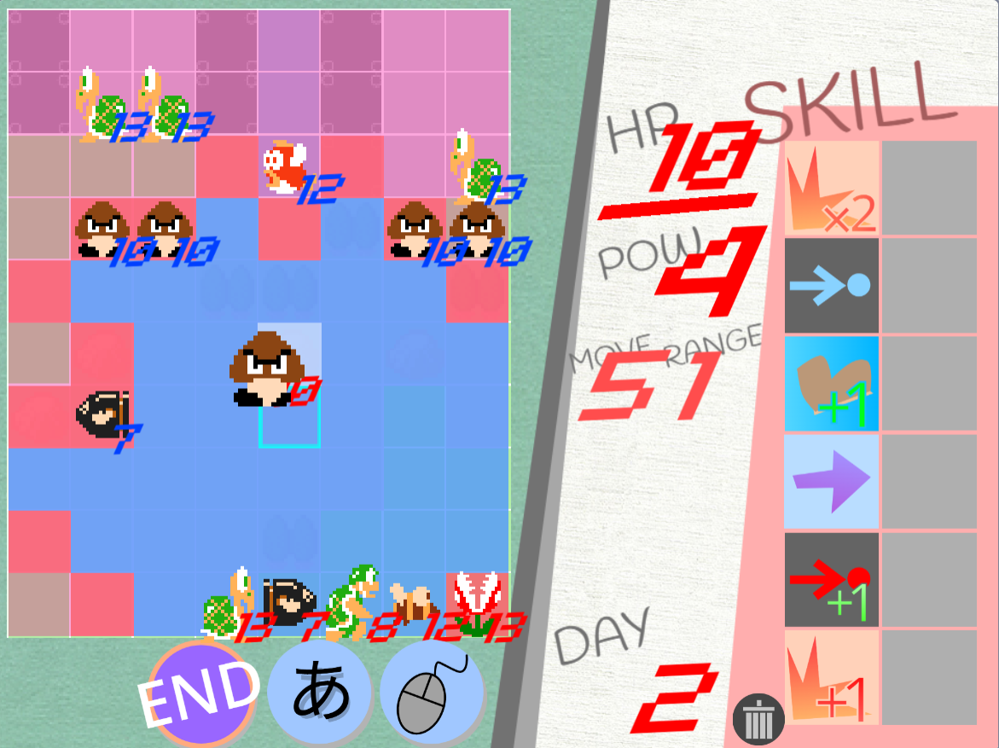
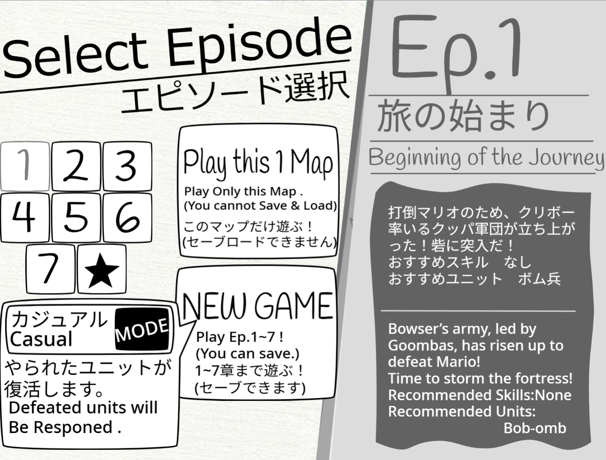
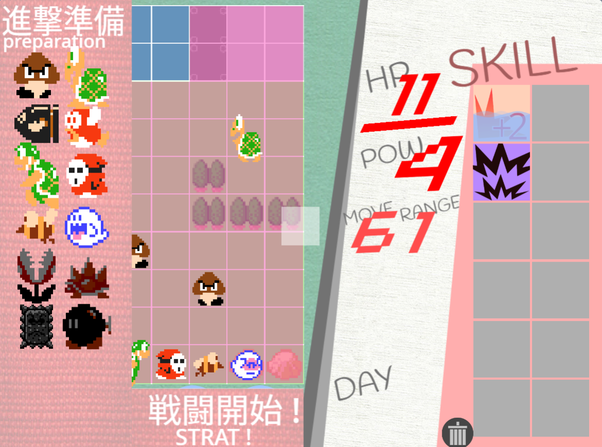
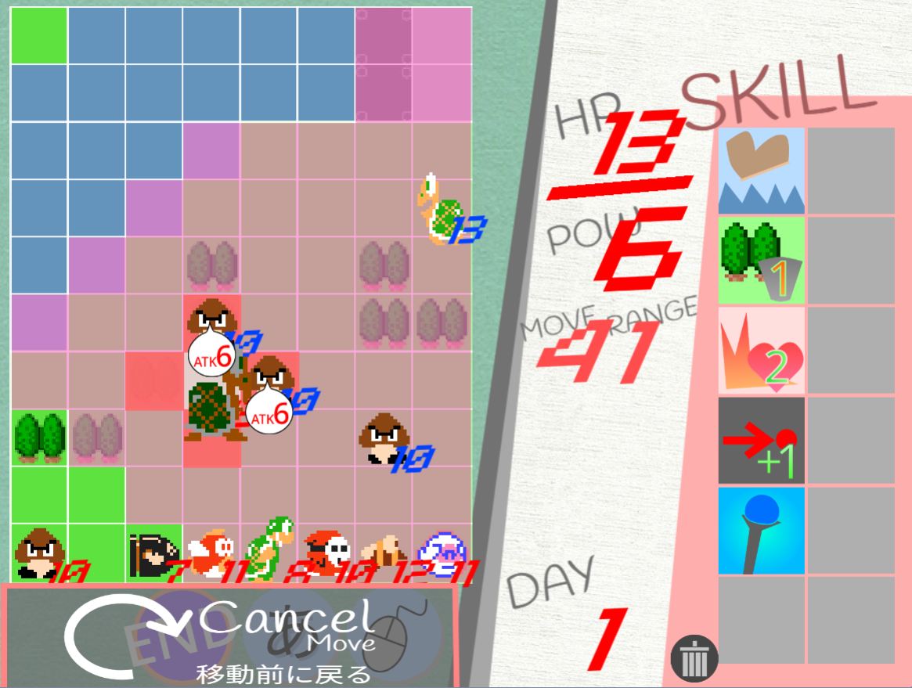
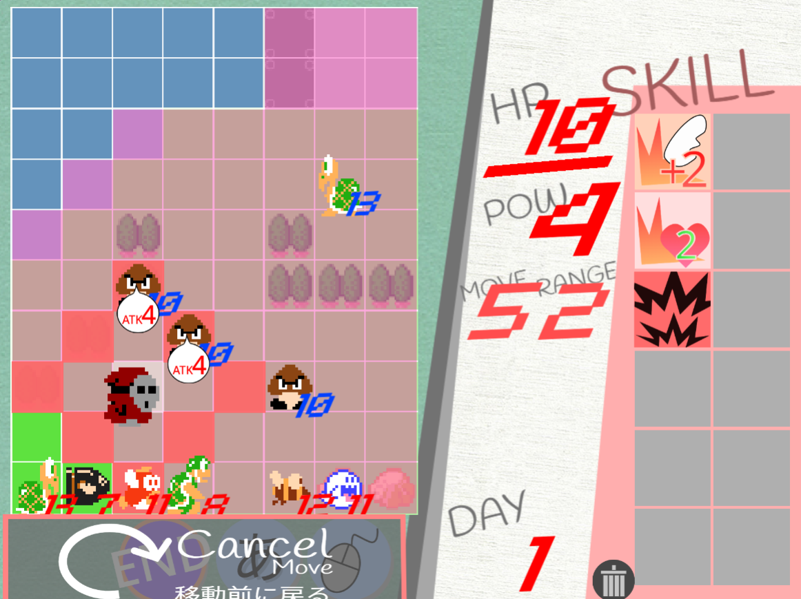
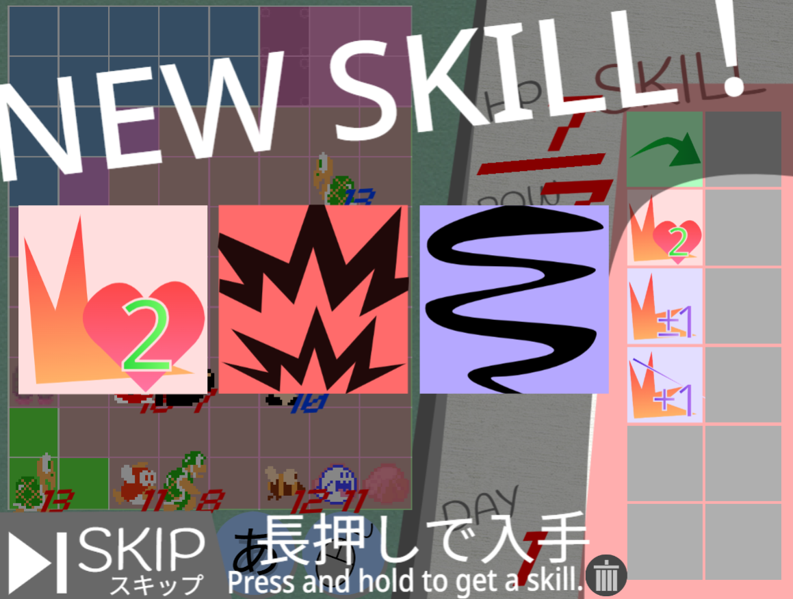

STORY
あらすじ
「じゃあな。おれたちマリオのところ行くから。」 そう言って、仲間たちは次々とどこかへ消えた。 大魔王クッパは、マリオにやられて療養中。 残されたのは、たった9人のクッパ軍団。 もとのクッパ軍団を取り戻すため、 彼らは長い旅に出た。 この旅の目的は一つ、「マリオを倒すだけ」…！
どんなゲーム？
このゲームはクッパ軍団のターン制スクエア型SRPGです！移動、攻撃だけの簡単操作で、全8マップクリアを目指しましょう！

あらすじ
「じゃあな。おれたちマリオのところ行くから。」 そう言って、仲間たちは次々とどこかへ消えた。 大魔王クッパは、マリオにやられて療養中。 残されたのは、たった9人のクッパ軍団。 もとのクッパ軍団を取り戻すため、 彼らは長い旅に出た。 この旅の目的は一つ、「マリオを倒すだけ」…！
遊び方
タッチ操作だけで遊べます。
まずはステージを選んで、「1マッププレイ」か「ロード」するか選びます。「1マッププレイ」は、そのマップだけを遊びます。
スキルはレンタルされるので安心！
「ロード」では、前章のセーブデータをペーストすることで続きが遊べます！スキルはレンタルされず、自分で育成してきたものを使います。

カジュアルモードでは、やられたユニットが次の章で復活します！
しかし、クラシックモードにすると、やられたユニットが次の章で復活しなくなります！
プレイスタイルに合わせて変更してください！

ゲームが始まったら、まず出撃するユニットを選びましょう。出撃予定のユニットは明るく光ります。
準備ができたら、戦闘開始！
まずは、ユニットをドラッグしてみましょう。
移動範囲が青く光ります。
好きな位置にドロップすると、移動できます！

移動後のユニットを再びドラッグすると、攻撃できます！
赤い範囲にいる敵にドロップすると、バトルが始まります。
また、下の方にドロップすると、移動をキャンセルすることもできます！

ヘイホーやハンマーブロスなどの遠距離ユニットは、射程が1より長いです。
離れた敵を攻撃でき、戦闘で反撃を受けづらいので、便利です！
戦闘では、攻撃側と防御側に分かれて行動します！
まず、攻撃側が防御側に攻撃します。
この時、攻撃側のPOWステータスと、スキルによる加算がそのまま攻撃力になります！
その後、距離が防御側の射程に対応していた場合、防御側が反撃します。

敵を倒したユニットはレベルアップし、ランダムなスキル3個の中から1個選び、入手できます！
各マップごとに定められたクリア条件を満たせば、ステージクリアです！
ロードして始めた場合、セーブコードが出るので忘れずに保管しておきましょう。
ステージ紹介
勝利条件は制圧。
橋を通って、砦に突入！
勝利条件は制圧。
まだまだ簡単。
勝利条件は7ターン経過。
大軍が押し寄せてくるぞ！
勝利条件は制圧。
3の倍数ターンに全ユニットの移動力が+3！
かなりカオス。
勝利条件は制圧。
本作唯一の索敵マップ。
勝利条件は10ターン以内の敵全滅。
二手に分かれて殲滅！
勝利条件はマリオ撃破。
制圧でマリオを弱体化できる！それまで逃げ切れ！
勝利条件は敵全滅。おまけマップ。
すべてを出し切れ！
おすすめスキル紹介
戦闘で、敵の反撃後に再攻撃できる！
攻撃性能が格段に上がる
戦闘後、2マス移動できる！
ヒット＆アウェイができるぞ
減ったHPの半分がPOWに加算される(最大6)
攻撃力が大幅アップ
クリボーの初期スキル。
隣接するユニットのMOVE+1だ
スキルの枠をすべて埋めてレベルアップすると…？
実は！超強い「マスタースキル」が手に入ります！
キャラによって効果が違います！
